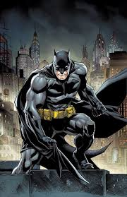

Impact
Over 80 years, Batman has appeared in thousands of comics, evolving from a crime fighter to a complex character grappling with morality and identity. Iconic portrayals in films and television, from Adam West to Christian Bale, have solidified Batman’s status as a cultural icon. A massive franchise, Batman has inspired video games, toys, and merchandise, appealing to fans of all ages.
Symbolism
Batman's quest explores the thin line between justice and vengeance, raising questions about morality and the nature of heroism. Batman is more than just a superhero; he represents hope, resilience, and the enduring fight for justice. His legacy continues to inspire, provoke thought, and entertain audiences around the world, making him a timeless symbol of heroism.
